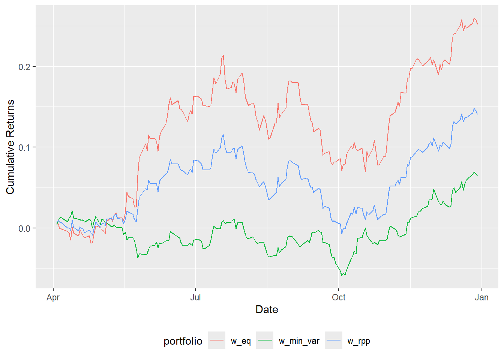
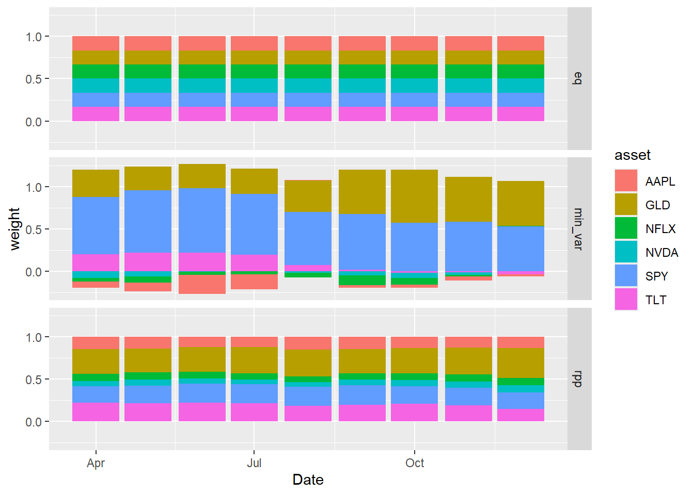

library(quantmod) # to download stock data from Yahoo Finance
library(dplyr) # to transform data
library(tidyr) # to convert from wide to long data format
library(ggplot2) # to draw chartsRisk Parity Portfolio
An exercise in understanding the mechanics of the risk parity portfolio by implementing the algorithm myself
Intro/Overview
One algorithm under the umbrella of portfolio optimization that sounded interesting to me is called the risk parity portfolio. All of the portfolio optimization methods are about picking a set of weights for the different assets in a portfolio to optimize some objective function. In the case of the risk parity portfolio, the weights are selected so that each asset in the portfolio contributes an equal amount of risk. Risk is measured in terms of standard deviation of returns.
Setting Up
Loading Libraries
Loading Data
For this example I will pick a few tickers with different risk profiles to show how the algorithm works. I will just use one year of data since this is mainly an exercise in understanding the algorithm, not trying to actually build a trading strategy and backtest over long periods.
The quantmod package contains a function called getSymbols() which lets the user pick one or more stock symbols and specify a time period, and then it downloads the relevant data from Yahoo Finance.
# pick a few tickers and download the data from Yahoo Finance
symbols_vec = c("SPY","TLT","GLD","AAPL","NFLX","NVDA")
getSymbols(symbols_vec, from = "2023-01-01", to = "2023-12-31")
# combine adjusted close prices into one dataset
# a bit weird because quantmod likes to return each ticker
# as a new object in the environment
df_returns = data.frame()
for(i in 1:length(symbols_vec)){
# keep only the adjusted returns data
cmd = paste0(symbols_vec[i], "=", symbols_vec[i], "[,grepl('Adjusted',colnames(", symbols_vec[i], "))]")
eval(parse(text = cmd))
# combine into one data frame
if(i == 1){
cmd = paste0("df_returns = ", symbols_vec[i])
eval(parse(text = cmd))
}else{
cmd = paste0("df_returns = merge(df_returns, ", symbols_vec[i], ")")
eval(parse(text = cmd))
}
}
# clean up column names
colnames(df_returns) = gsub(".Adjusted", "", colnames(df_returns))
# transform adjusted close prices to daily returns
df_returns[-1,] = apply(df_returns, 2, function(x){x[2:length(x)] / x[1:(length(x)-1)] - 1})
df_returns = df_returns[-1,]
df_returns = data.frame(Date = index(df_returns), df_returns)Here is how the data looks after this initial cleanup.
knitr::kable(head(df_returns))| Date | SPY | TLT | GLD | AAPL | NFLX | NVDA |
|---|---|---|---|---|---|---|
| 2023-01-04 | 0.0077202 | 0.0136999 | 0.0094119 | 0.0103143 | 0.0490252 | 0.0303180 |
| 2023-01-05 | -0.0114134 | 0.0041811 | -0.0124515 | -0.0106046 | 0.0009373 | -0.0328158 |
| 2023-01-06 | 0.0229321 | 0.0183964 | 0.0187075 | 0.0367939 | 0.0188892 | 0.0416404 |
| 2023-01-09 | -0.0005668 | 0.0053241 | 0.0022451 | 0.0040890 | -0.0012042 | 0.0517532 |
| 2023-01-10 | 0.0070129 | -0.0165499 | 0.0036760 | 0.0044563 | 0.0392486 | 0.0179805 |
| 2023-01-11 | 0.0126477 | 0.0162516 | -0.0006868 | 0.0211122 | -0.0008549 | 0.0057829 |
Benchmarks
It may be helpful to look at a couple of other portfolio allocation methods to get a sense of how this method compares with other options. I will pick a couple of simple examples to compare with.
Equally Weighted Portfolio
This method allocates an equal amount of money to each asset in the portfolio. It is extremely simple, but that is part of what makes it a useful benchmark. The difference between this method and the risk parity portfolio is that the equal weights here mean equally balance-weighted, not equally risk-weighted. Putting an equal amount of money into treasuries vs tech stocks would likely mean that the money in tech stocks contributes much more risk to the portfolio compared with the money invested in treasuries. In other words, while the amount of money invested is diversified across assets, the risk is not necessarily as diversified since one asset class might represent the majority of the risk.
# weight vector for equal weight
w1 = rep(1, ncol(df_returns)-1)
w1 = w1/sum(w1)
w1[1] 0.1666667 0.1666667 0.1666667 0.1666667 0.1666667 0.1666667Minimum Risk Portfolio
This portfolio optimization problem can be defined as minimizing the total variance of the portfolio subject to the condition that the weights must add up to one.
\[ Minimize \hspace{2.5em} \frac{1}{2} w^T \Sigma w \\ \text{subject to} \hspace{2.5em} 1^T w = 1 \]
This optimization problem can be solved using lagrange multipliers. Construct the langrangian as the combination of the objective function and the constraints, then the two partial derivatives can be set equal to zero and used to solve for the unknown quantities of interest.
\[ L(x,\lambda) = f(x) - \lambda g(x) \\ \frac{dL}{dx} = 0 \hspace{2.5em} \frac{dL}{d \lambda} = 0 \] In the context of this problem this becomes:
\[ \begin{align} L(w,\lambda) &= \frac{1}{2} w^T \Sigma w - \lambda (1^T w - 1) \\ \frac{dL}{dw} &= \Sigma w - \lambda 1^T = 0 \\ w &= \lambda \Sigma^{-1} 1 \\ \\ \frac{dL}{d \lambda} &= 1^T w - 1 = 0 \\ 1^T w &= 1 \end{align} \] Multiplying the first equation through by 1 on the left side lets us use the constraint from the second equation which removes \(w\) and allows us to solve for \(\lambda\).
\[ \begin{align} w &= \lambda \Sigma^{-1} 1 \\ 1^T w &= \lambda 1^T \Sigma^{-1} 1 \\ 1 &= \lambda 1^T \Sigma^{-1} 1 \\ \lambda &= \frac{1}{1^T \Sigma^{-1} 1} \end{align} \] Plugging \(\lambda\) back into the equation for \(w\) solves for \(w\).
\[ \begin{align} w &= \lambda \Sigma^{-1} 1 \\ &= \frac{\Sigma^{-1} 1}{1^T \Sigma^{-1} 1} \end{align} \]
This is simple to implement, it just involves computing and then inverting the covariance matrix \(\Sigma\) for the daily returns data.
# get inverse of covariance matrix of returns
cov_mat = cov(df_returns[,-1])
cov_mat_inv = solve(cov_mat)
# compute weights
vec1 = rep(1, nrow(cov_mat_inv))
lambda = vec1 %*% cov_mat_inv %*% vec1
lambda = as.numeric(1/lambda)
w2 = as.vector(lambda * cov_mat_inv %*% vec1)
w2[1] 0.61758079 0.07622508 0.41066270 -0.02959958 -0.03462770 -0.04024129One interesting thing to note here is that while the weights were constrained to sum to 1, they were not constrained to be non-negative. The negative weights here on the riskier assets mean that achieving the minimum variance portfolio requires taking short positions in those assets.
Risk Parity Portfolio
This time the problem is not to minimize risk, it is to impose a constraint that each asset in the portfolio contributes equally to the total risk.
Theory
The total variance of the portfolio was minimized in the objective function of the minimum variance portfolio. Standard deviation is just the square root of variance, so the total standard deviation of the portfolio is \(\sigma (w) = \sqrt{w^T \Sigma w}\). This can be decomposed by taking the partial derivative with respect to the weight of each individual asset in the portfolio.
\[ \sigma(w) = \sum_{i=1}^N w_i \frac{d \sigma}{dw_i} = \sum_{i=1}^N \frac{w_i(\Sigma w)_i}{\sqrt{w^T \Sigma w}} \]
In other words, asset \(i\)’s contribution to the total portfolio standard deviation, or its Risk Contribution (RC) is:
\[ RC_i = \frac{w_i(\Sigma w)_i}{\sqrt{w^T \Sigma w}} \]
The constraint that needs to be imposed is to have each asset have the same risk contribution, which should be an equal amount of the total risk of the portfolio.
\[ RC_i = \frac{1}{N} \sigma(w) = \frac{1}{N} \sqrt{w^T \Sigma w} \] Dividing both sides by \(\sigma(w)\) normalizes by total portfolio risk, giving us:
\[ \begin{align} \frac{w_i(\Sigma w)_i}{\sqrt{w^T \Sigma w}} &= \frac{1}{N} \sqrt{w^T \Sigma w} \\ \frac{w_i(\Sigma w)_i}{w^T \Sigma w} &= \frac{1}{N} \end{align} \]
Next comes a change of variables in two places. One is substituting \(b_i = \frac{1}{N}\) which is a generalization and will allow us to specify something other than equal risk contributions if desired later. Another is \(x_i = \frac{w_i}{\sqrt{w^T \Sigma w}}\), or said another way, \(x\) is just the weight vector \(w\) normalized by total portfolio standard deviation. After this change of variables, the last equation now looks like this:
\[ \begin{align} \frac{w_i(\Sigma w)_i}{w^T \Sigma w} &= \frac{1}{N} \\ \frac{w_i}{\sqrt{w^T \Sigma w}} \Sigma \frac{w_i}{\sqrt{w^T \Sigma w}} &= b_i \\ x_i (\Sigma x)_i &= b_i \\ x_i (\Sigma x)_i - b_i &= 0 \end{align} \]
This can be written out further to separate \(x_i\) from other weights \(x_j\) to yield a quadratic equation.
\[ \begin{align} x_i (\Sigma x)_i - b_i &= 0 \\ \sigma_{ii}^2 x_i^2 + x_i\sum_{i=/=j}\sigma_{ij}^2 x_j - b_i &= 0 \end{align} \]
Then the solution \(x_i^*\) comes from the quadratic formula \(x^* = \frac{-b + \sqrt{b^2 - 4ac}}{2a}\)
\[ x_i^* = \frac{-\sum_{i=/=j}\sigma_{ij}^2 x_j + \sqrt{(\sum_{i=/=j}\sigma_{ij}^2 x_j)^2 + 4 \sigma_{ii}^2 b_i}}{2\sigma_{ii}^2} \]
Since each weight \(x_i\) is written in terms of the others \(x_j\) we just iteratively update the weights until convergence is reached.
Implementation
# write it as a function that takes a covariance matrix as input
rpp <- function(cov_mat, b = NULL, tolerance = 0.00000001, max_iter = 100){
# initialize weights
# as equal weights normalized by total portfolio risk
x = rep(1, ncol(cov_mat))
x = x/sqrt(sum(cov_mat))
sigma_x = cov_mat %*% x
# use equal risk weights by default
if(is.null(b)){
b = rep(1, ncol(cov_mat))
b = b/sum(b)
}
# update weights
for(n in 1:max_iter){
for(i in 1:nrow(cov_mat)){
z = sigma_x[i] - cov_mat[i,i]*x[i]
x_star = (-z + sqrt(z^2 + 4*cov_mat[i,i]*b[i])) / (2*cov_mat[i,i])
x[i] = x_star
sigma_x = cov_mat %*% x
}
# check for convergence, stop if converged
if(max(abs(x * as.vector(cov_mat %*% x) - b)) < tolerance){
break
}
}
return(x/sum(x))
}
# get RPP weights
w3 = rpp(cov_mat)
w3[1] 0.20723268 0.19614619 0.30177870 0.14234206 0.08513825 0.06736213# check that the weights result in equal risk contributions
w3 * as.vector(cov_mat %*% w3) / sqrt(as.numeric(w3 %*% cov_mat %*% w3))[1] 0.001235473 0.001235473 0.001235473 0.001235473 0.001235473 0.001235473Performance
Now we can compare these three methods and see how they differ in terms of returns and how the weights change over time. For the purposes of this comparison I will assume that re-balancing happens monthly, and that at the start of each month the weights are calculated by looking backwards at the prior 3-month period.
# pull out month as a feature
df_returns$month = as.integer(substr(df_returns$Date, 6, 7))
# for each month get weights based on previous 3 months
df_backtest = data.frame()
df_w = data.frame()
for(i in 4:12){
# previous 3 months of returns
df = df_returns[(df_returns$month >= i-3) & (df_returns$month <= i-1),]
# equal weights
w1 = rep(1, ncol(df)-2)
w1 = w1/sum(w1)
# minimum variance weights
cov_mat = cov(df[,!(colnames(df) %in% c("Date","month"))])
cov_mat_inv = solve(cov_mat)
vec1 = rep(1, nrow(cov_mat_inv))
lambda = vec1 %*% cov_mat_inv %*% vec1
lambda = as.numeric(1/lambda)
w2 = as.vector(lambda * cov_mat_inv %*% vec1)
# risk parity portfolio weights
w3 = rpp(cov_mat)
# returns for the new month
df = df_returns[df_returns$month == i,]
dt = df$Date
df = df[,!(colnames(df) %in% c("Date","month"))]
r1 = rowSums(sweep(df, 2, w1, FUN="*"))
r2 = rowSums(sweep(df, 2, w2, FUN="*"))
r3 = rowSums(sweep(df, 2, w3, FUN="*"))
rets = data.frame(Date = dt, w_eq = r1, w_min_var = r2, w_rpp = r3)
df_backtest = rbind(df_backtest, rets)
# store weight vectors over time
w_month = data.frame(
Date = as.Date(paste0("2023-",formatC(i, width=2, format="d", flag="0"),"-01")),
type = c(rep("eq", 6), rep("min_var", 6), rep("rpp", 6)),
asset = rep(colnames(df), 3),
weight = c(w1, w2, w3)
)
df_w = rbind(df_w, w_month)
}
# plot of performance
df_backtest %>%
mutate(Date = as.Date(Date)) %>%
mutate(w_eq = cumprod(1 + w_eq) - 1) %>%
mutate(w_min_var = cumprod(1 + w_min_var) - 1) %>%
mutate(w_rpp = cumprod(1 + w_rpp) - 1) %>%
pivot_longer(!Date, names_to = "portfolio", values_to = "cum_ret") %>%
ggplot(aes(x = Date, y = cum_ret, color = portfolio)) +
geom_line() +
labs(y = "Cumulative Returns") +
theme(legend.position = "bottom")
# plot of weights over time for the 3 different methods
df_w %>%
ggplot(aes(x = Date, y = weight, fill = asset)) +
geom_bar(position = "stack", stat = "identity") +
facet_grid(type ~ .)
Conclusion
The risk parity portfolio represents an interesting way to look at portfolio allocation problem, focusing on the constraints as the objective. I only scratched the surface of the implementation, as there are other conditions that could also be considered such as box constraints for the weights or adding other conditions to optimize for. The riskParityPortfolio R package has excellent vignettes to explain the material for the interested reader.